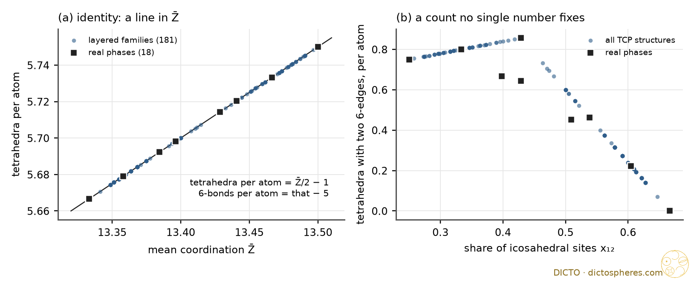

Every count of the tetrahedrally close-packed metals, exactly, on 18 real phases and 181 layered stackings, and the one number behind them
A Frank–Kasper (tetrahedrally close-packed, TCP) structure is cut by its atoms into tetrahedra only. The neighbours of an atom are its Delaunay neighbours, the faces of its Voronoi cell. Each atom has Z = 12, 14, 15 or 16 neighbours; a bond is shared by 5 or 6 tetrahedra; Z = 12 + (number of six-fold bonds). The six-fold bonds form the major skeleton (Frank and Kasper), the disclination network (Nelson): lines through Z14 sites that meet three at a time at Z15 and four at a time at Z16.
Coordinates: AFLOW prototype encyclopedia (CIF files) and the Crystallography Open Database (COD), 18 real phases (Table 1). The topology is read by a periodic Delaunay step on the published coordinates and then checked: every coordination shell is a closed triangulated sphere (Euler number 2), every bond fold is 5 or 6, Z = 12 + #six-fold bonds, no two six-fold neighbours are adjacent in a shell. Every count after that is an integer, and every test below is exact (fractions). Four phases fail the check and are not TCP: χ (α-Mn) and Mg17Al12 (bonds shared by 4 tetrahedra), Mg23Al30 and Mg21Zn25 (folds 3, 4 or 7). So χ is not Frank–Kasper, as expected.
Two layered families give the splash its spread, built exactly from words:
Square–triangle rows (Sullivan; Sadoc and Mosseri 2016): a word in S (a row of squares) and T (a row of triangles) fixes a square–triangle tiling; its vertices carry Z14 columns, edge midpoints Z12, triangle centres Z15, four Z14 inside each square. S alone is A15, T alone is Z (Zr4Al3), ST is H, STT is J. All 62 words checked TCP (all primitive words up to length 7 and 30 random words of 20 rows).
Kagome slabs (Frank and Kasper 1959, read off the AFLOW and COD files here): kagome nets whose hexagons are centred at close-packed letters ai; each step is ti ∈ {0, +, −}. A step ± is a Laves slab (three-atom sandwich, 6 atoms); a step 0 is a Z slab (two caps and a pair, 7 atoms). + alone is C15, +− is C14, 0 is Z, 0+ is μ, 0+0− is K7Cs6. All 119 words checked TCP (all words up to length 6 and 40 random words of 14 slabs). The compositions of I, C, X and Mg4Zn7 are those of one Z slab with 2, 3, 5 and 8 Laves slabs.
Identities (every TCP structure; checked on all 199). Per atom, with ρ = six-fold bonds per atom:
Z̄ = 12 + 2ρ, bonds = 6 + ρ, five-fold bonds = 6, tetrahedra = 5 + ρ, triangles = 10 + 2ρ.
No tetrahedron has two six-fold edges at one corner; a tetrahedron has 0, 1 or 2 six-fold edges, and two only when they are opposite.
Proof. An atom has 12 five-fold bonds whatever its Z, so five-fold bonds per atom = 12/2 = 6. Its shell has 2Z − 4 triangles, so tetrahedra per atom = (2Z̄ − 4)/4 = Z̄/2 − 1. Two six-fold edges ab, ac of one tetrahedron would make b and c adjacent six-fold vertices in the shell of a, which a Frank–Kasper shell does not have. ∎ All of this is classical (Frank and Kasper; Nelson's disclination picture; Coxeter's mean number of tetrahedra per edge, 6 − 12/Z̄, is the one count here that is not a line).
Yarmolyuk–Kripyakevich (1974). In every real Frank–Kasper phase, 6N12 = 2N14 + 7N15 + 12N16, equivalently
Z̄ = 68/5 − (2/5)·x12 = 66/5 + (2/5)·m, ρ = (3 + m)/5, tetrahedra per atom = (28 + m)/5.
In general Z̄ = 68/5 − (2/5)x12 − (6/5)a0 with a0 = x12 − x14/3 − 7x15/6 − 2x16.
Proof of the general form. Expand both sides with x12 + x14 + x15 + x16 = 1. ∎ The plane a0 = 0 meets the simplex of shares in a triangle with corners A15 (Z̄ = 27/2), C15 (40/3) and the Z12:Z15 = 7:6 point (174/13); Z̄ is linear, so on the plane 40/3 ≤ Z̄ ≤ 27/2, Frank and Kasper's range. The real phases are sums of the three YK units A15 (1:3:0:0), Laves (2:0:0:1) and Z (3:2:2:0) with whole counts, e.g. R = 6 A15 + 24 Laves + 9 Z, Bergman T = 40 Laves + 6 Z (Table 1). In the square–triangle family the units are rows (S = 2 A15 units, T = 1 Z unit), in the kagome family slabs (± = 2 Laves units, 0 = 1 Z unit), so YK is a theorem for both families. For other structures it is not: the computer search found three counterexamples, 7:4:2:2, 6:6:4:0 and 6:8:4:0, with a0 = −2/45, −1/24, −2/27; they sit exactly on Z̄ − line = −(6/5)a0 (Figure 1b). The third has Z̄ = 122/9 > 13½.
Result (exact on all 62 and 119 stackings). Per tile row (square–triangle) or per kagome slab: every site count and every topological count is a line in the share of S rows or Z slabs (window 1). Every count by kind (bonds by end types, neighbour types, rings of six-fold bonds, tetrahedra by corner types) is fixed by neighbouring pairs of units (window 2). No count needs more. The Laves letter (c or h) changes no count.
Window 1 (per row, per slab): sites S 8 / T 7, slab ± 6 / 0 7; Z12: S 2, T 3, ± 4, 0 3; Z14: S 6, T 2, 0 2; Z15: T 2, 0 2; Z16: ± 2; tetrahedra: S 46, T 40, ± 34, 0 40; six-fold bonds: S 6, T 5, ± 4, 0 5. These are the composition matrices of Sadoc and Mosseri (square–triangle) and of the Laves/Z intergrowth picture (kagome), both known.
Window 2: a count F fixed by a pair of neighbouring units has mean F(TT) + [F(ST) + F(TS) − 2F(TT)]·s + Δ·p, with s the S share, p the share of SS pairs and Δ = F(SS) + F(TT) − F(ST) − F(TS), exactly as in the perovskite study. Kagome: F(LL) + [F(LZ) + F(ZL) − 2F(LL)]·z + Δ·p with z the share of Z slabs and p the share of 00 pairs. Δ is never zero for a window-2 count (else it would be a line). The defects come in the perovskite pattern +1, −2, +1 over the three end-type pairs, so their sum, a window-1 count, is a line:
| count | square–triangle (S/T) | Δ | kagome (Laves L / Z) | Δ |
|---|---|---|---|---|
| six-fold bonds Z14–Z14, Z14–Z15 (Z16), Z15–Z15 (Z16–Z16) | 2 + 3s + p, 2s − 2p, 3 − 4s + p | +1, −2, +1 | z + p, 2z − 2p, 4 − 5z + p | +1, −2, +1 |
| neighbours of the same pairs (ordered) | +2, −2, −2, +2 | +2, −2, −2, +2 | ||
| tetrahedra 2444, 2445, 2455 (S/T); 2266, 2246, 2244 (L/Z) | 36s + 4p, 8s − 8p, … | +4, −8, +4 | 24 − 30z + 6p, 12z − 12p, 6p | +6, −12, +6 |
| tetrahedra 4444, 4445, 4455 (two opposite six-fold edges) | 4s + 2p, … | +2, −4, +2 | only 4455: 6z | 0 |
(s, z: shares of S rows and Z slabs; p: share of neighbouring SS or 00 pairs; per row or slab. Tetrahedron kinds by corners, 2 = Z12, 4 = Z14, 5 = Z15, 6 = Z16. Full list: data/results.md.)
Stacking-blindness. 22 Z/L patterns of the kagome family are realised by two or more different Laves stackings; for each, all 119 counts per slab agree. So no count in this census sees whether a Laves slab sits cubic or hexagonal: C15, C14, C36, 9R and the long-period Laves phases have the same census per atom, and so do μ and K7Cs6. The skeleton counts agree too; only the embedding of its 4-valent net differs (cubic or hexagonal).
| phase | compound (source) | N | Z12:Z14:Z15:Z16 | Z̄ | tetr./atom | ρ | a0 | YK units A15+L+Z | major skeleton |
|---|---|---|---|---|---|---|---|---|---|
| A15 | Cr3Si (AFLOW) | 8 | 2:6:0:0 | 27/2 | 23/4 | 3/4 | 0 | 2+0+0 | straight lines, 3 directions |
| C15, C14, C36 | MgCu2, MgZn2, U2Cr3Si, MgNi2 (AFLOW) | 24, 12, 12, 24 | 2:0:0:1 | 40/3 | 17/3 | 2/3 | 0 | 0+N/3+0 | 3D net, 4-valent |
| Laves 9R and long period | Mg(Li,Zn)2, Mg(Zn,Ag)2 (COD 1522206, 2105354, 2105334) | 54, 54, 126 | 2:0:0:1 | 40/3 | 17/3 | 2/3 | 0 | 0+N/3+0 | 3D net, 4-valent |
| Z | Zr4Al3 (AFLOW) | 7 | 3:2:2:0 | 94/7 | 40/7 | 5/7 | 0 | 0+0+1 | layer net (3-valent) + lines |
| σ | CrFe type (AFLOW; COD 2106167) | 30 | 10:16:4:0 | 202/15 | 86/15 | 11/15 | 0 | 4+0+2 | layer net (2,3-valent) + lines |
| μ | W6Fe7 (AFLOW) | 39 | 21:6:6:6 | 174/13 | 74/13 | 9/13 | 0 | 0+6+3 | 3D net (2,4) + layer nets (3) |
| δ | MoNi (COD 2310246) | 56 | 24:20:8:4 | 94/7 | 40/7 | 5/7 | 0 | 4+4+4 | 3D net (2,3,4) |
| P | Mo–Ni–Cr (COD 2311049) | 56 | 24:20:8:4 | 94/7 | 40/7 | 5/7 | 0 | 4+4+4 | 3D net (2,3,4) + lines |
| R | Mo–Co–Cr, Mn85.5Si14.5 (COD 2310299, 2107202) | 159 | 81:36:18:24 | 710/53 | 302/53 | 37/53 | 0 | 6+24+9 | 3D net (2,3,4) |
| ν | Mn81.5Si18.5 (COD 2106034) | 186 | 74:80:20:12 | 1250/93 | 532/93 | 67/93 | 0 | 20+12+10 | 3D nets (2,3,4) + lines |
| T (Bergman) | Mg32(Al,Zn)49 (AFLOW) | 162 | 98:12:12:40 | 1082/81 | 460/81 | 55/81 | 0 | 0+40+6 | 3D net (2,3,4) |
Per cell; ρ = six-fold bonds per atom; the six-fold share of all bonds is ρ/(6 + ρ). Z, δ and P share x12 = 3/7 and so share Z̄ = 94/7, as the YK line demands, though their shares of Z14, Z15, Z16 differ. Not processed: COD 2310313 (P phase; symmetry operations and cell in different settings), COD 1523827 (Mg51Zn20; degenerate points).
One more exact relation. Let σ be the number of six-fold bonds inside an atom's coordination shell. On all 18 real phases and all 181 family members,
ΣZ14 sites (σ − 4) + 2·ΣZ12 sites (6 − σ) = 8·N15.
A15: σ = 4 at Z14 and 6 at Z12, no Z15. Bergman T: 12·2 + 2·36 = 96 = 8·12. The identities fix only the sum of all σ (each six-fold bond lies in six shells, so Σσ = 6ρN), so this is a second, independent relation. It is not explained here. Because every structure with coordinates lies on the YK plane, the relation is fixed only up to adding a multiple of YK, and it cannot be tested on the three counterexamples (no coordinates published in reach). Three more exact relations tie the neighbour-type counts to the shell counts on the same set (data/relations2.txt): the local census of the real phases spans only 8 dimensions where identities and YK leave 12. Likely reason: all of them are built from a few motifs. Status: observed, open.

Reference library (ask-library, six searches: Frank–Kasper polyhedra Z14 Z15 Z16; Yarmolyuk–Kripyakevich mean coordination; disclination network major skeleton Nelson; space fullerenes Frank–Kasper enumeration; Shoemaker kagome layers σ μ Laves stacking; Sadoc–Mosseri square–triangle decoration): no Frank–Kasper paper in the library; hits were tetrahedron packings (Kallus–Elser, Haji-Akbari et al. 2009), Mosseri–Sadoc tile papers (Papadopolos–Ogievetsky 1999, Koca et al. 2020), stacking-disorder papers (Ganesh–Nasr 2023, Hart–Hansen–Kuhs 2021). Sadoc and Mosseri 2016 is in the catalogue only and was read from arXiv. Read: Sadoc and Mosseri, Quasiperiodic Frank–Kasper phases derived from the square-triangle dodecagonal tiling, arXiv 1609.01624 (pp. 1–7: major skeleton, the Z16-free decoration, composition matrix, z̄ = (108y + 47)/(8y + 7/2), Z16 stripe decoration); Deza, Delgado Friedrichs and Dutour Sikirić, talk "Space fullerenes" (table of 24 known structures with Z12:Z14:Z15:Z16, the YK conjecture a0 = 0, counterexamples 7:4:2:2, 6:6:4:0, 6:8:4:0, Nelson–Spaepen bound 13½ broken, Rivier–Aste conjecture, Laves stacking symbols ±1 and Frank–Kasper's 0, ±1); Gvozdetskyi, Gladyshevskii and Hlukhyy, Chem. Met. Alloys 7, 165 (2014) (YK equations ⟨CN⟩ = 13.6 − 0.4·C12 and C14 − C16 = 1.4 − 2.6·C12, structural formula (R3X)i(PX2)j(Q2R2X3)k, Hellner–Pearson condition, counterexamples); Dutour Sikirić, Delgado Friedrichs and Deza, Acta Cryst. A 66, 602 (2010) (abstract only; PDF embargoed). AFLOW and COD entries as in Table 1. Web searches: "Dutour Sikirić Delgado-Friedrichs Deza space fullerenes … Yarmolyuk Kripyakevich"; "Frank-Kasper structures Yarmolyuk Kripyakevich fractions Z12 Z14 Z15 Z16 A15 C15 Zr4Al3 linear combination"; "Dutour Sikirić Frank-Kasper structures 84 data files" (no data files found). In-house: Splash Rules (27 Oct), Splash Rules II perovskites (31 Oct, Window Law), #57, #66 (Swap ⇔ line). Classical, cited not read: Frank and Kasper 1958, 1959; Yarmolyuk and Kripyakevich 1974; Nelson 1983 and Nelson and Spaepen 1989; Shoemaker and Shoemaker 1986; Sinha 1972; Sullivan (square–triangle construction); Hellner and Pearson; Rivier and Aste 1996; Coxeter (mean edge number).
Conclusion: in Frank–Kasper phases one number, the disclination density, fixes every topological count by identity; on all real phases the non-icosahedral share fixes it too (the YK line, 1974), and the only way off that line is the YK defect; inside the layered families the perovskite Window Law holds with windows 1 and 2 and the Swap pattern +1, −2, +1. Status: done for counts (study 2026-10-31-splash2-frank-kasper). Open: the shell relation of Section 5, which needs a structure off the YK plane to test (the counterexamples of the 2010 search, if their coordinates can be obtained).